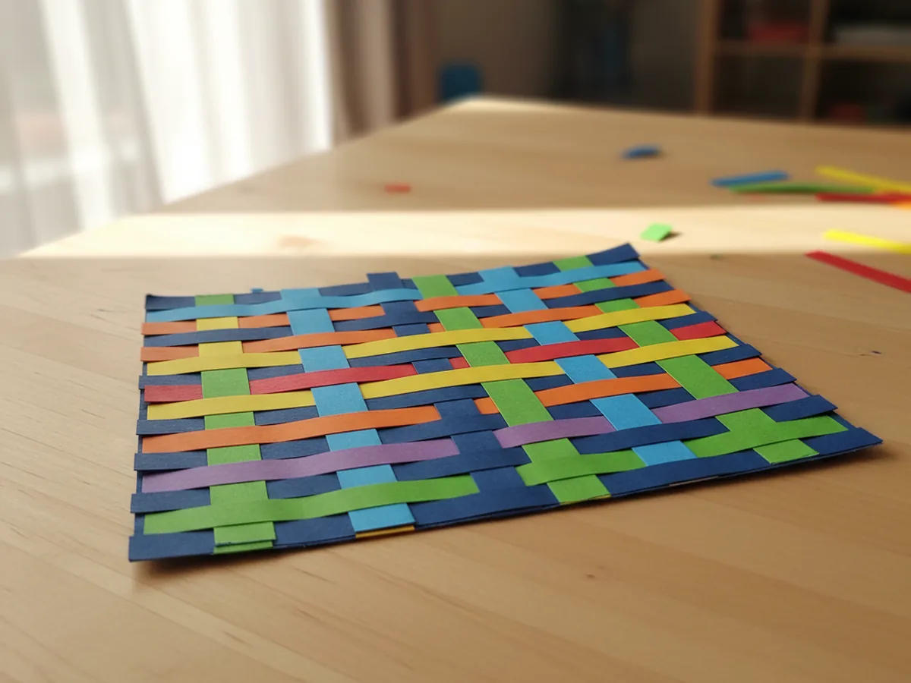
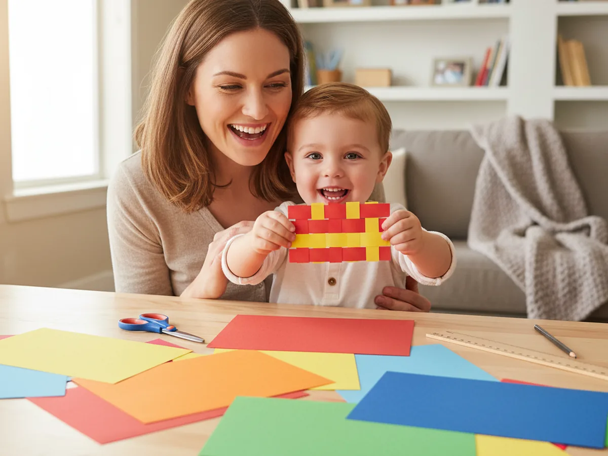
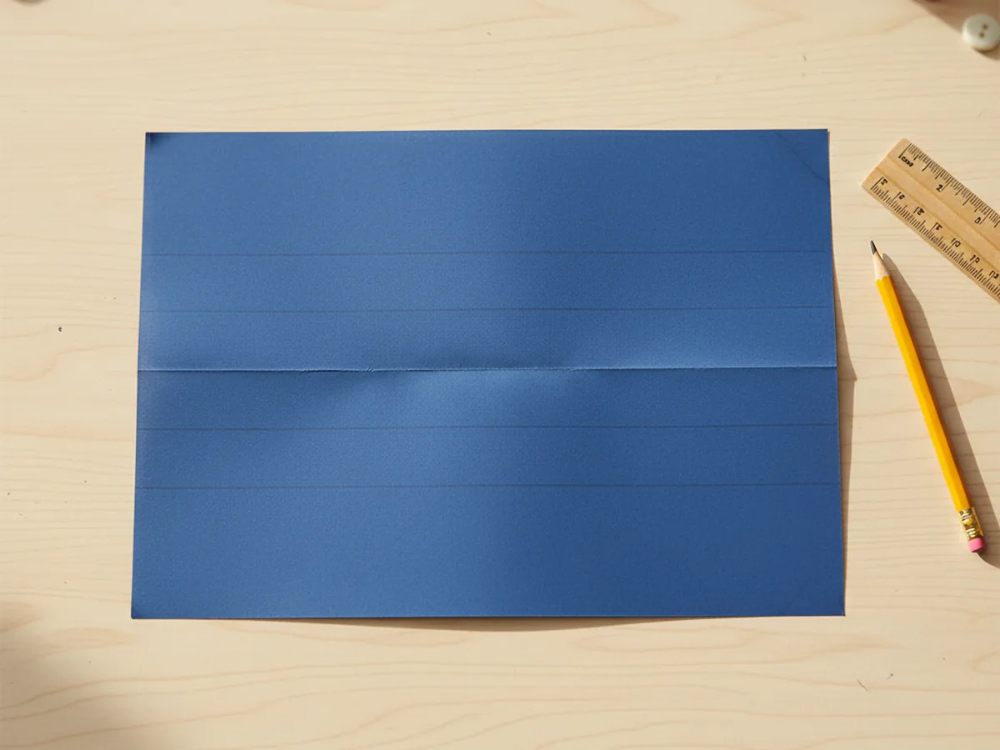
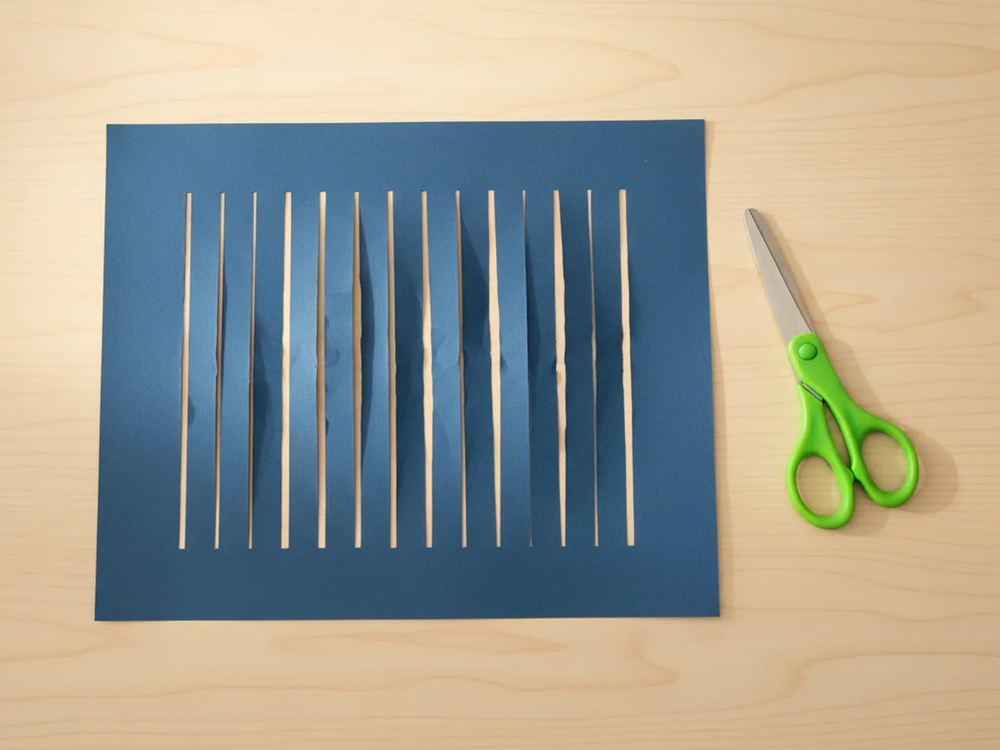
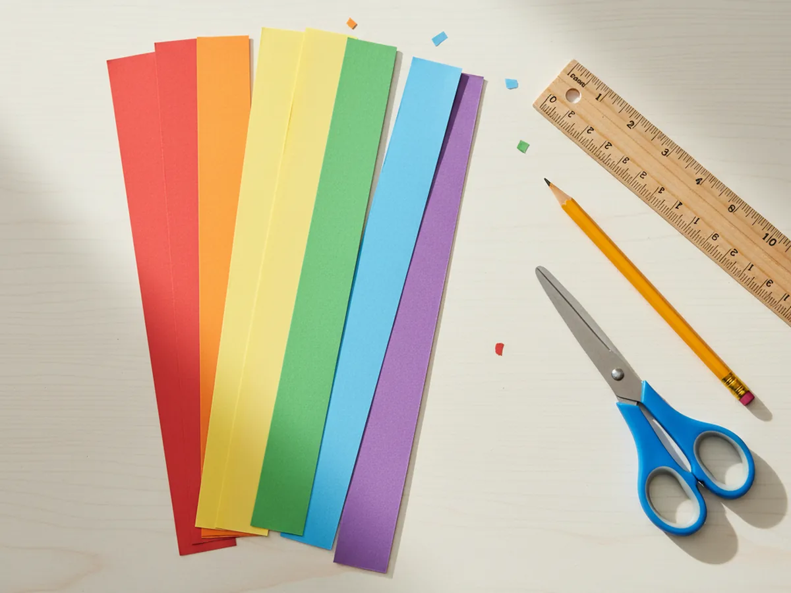
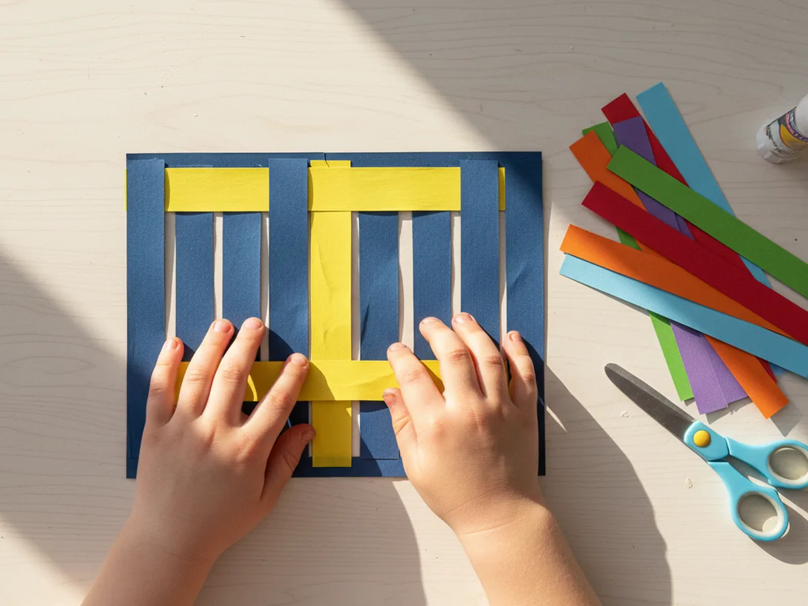
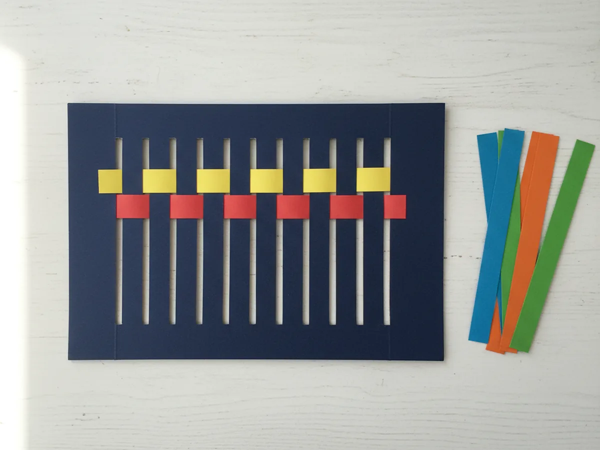
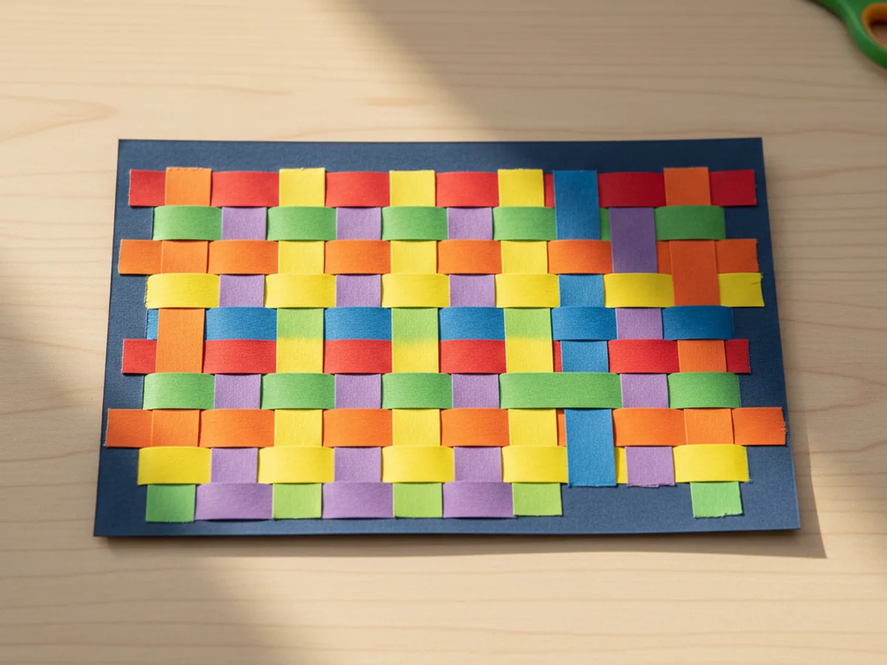
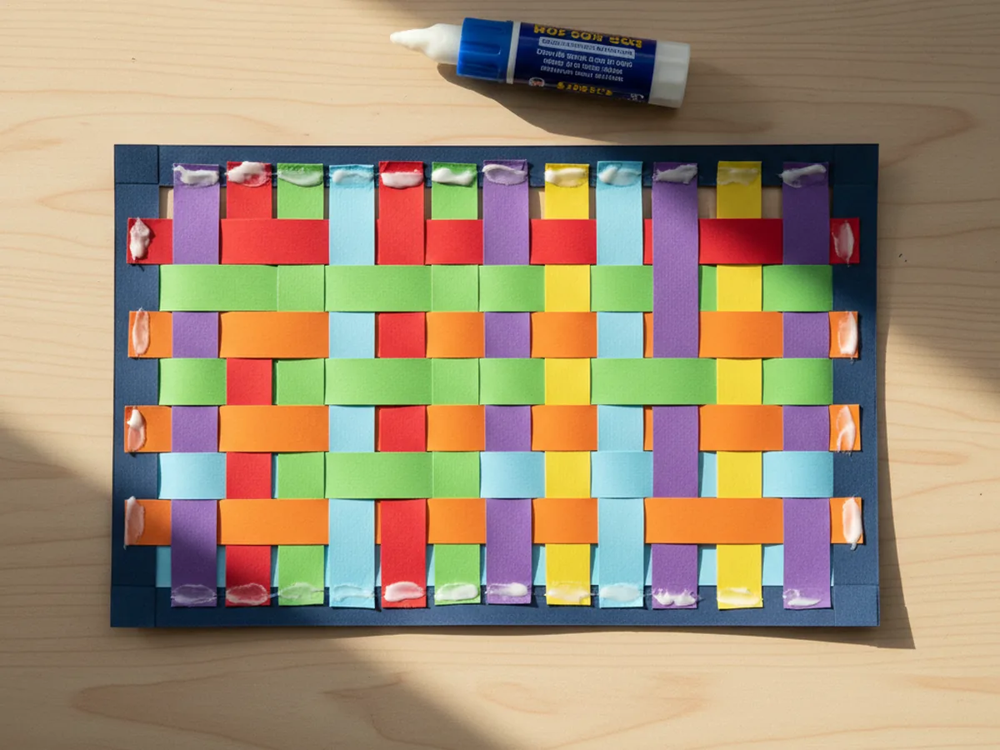

If you have been looking for a craft that feels almost like a tiny bit of magic, this paper weave craft is going to be a new favorite. With nothing more than a few sheets of construction paper, scissors, and a glue stick, you and your child can turn flat paper into a colorful woven mat in about 30 minutes. The finished result looks surprisingly beautiful, like something from a kindergarten art display, even though the technique is gentle enough for brand new little crafters. 🌈
This easy paper weave craft is the kind of cozy afternoon activity that fills up a quiet hour beautifully. There is no paint, no glitter, and no sticky cleanup. Just paper, scissors, and that satisfying over-and-under rhythm that quietly hooks every kid who tries it. By the end you will have a sweet handmade placemat, card front, or wall decoration that your child will want to show off to anyone who visits.
Why Kids Love This Craft
There is something genuinely soothing about paper weaving. The over and under pattern feels almost like a puzzle, and kids slip into a calm focused little zone as they figure it out. That gentle problem-solving builds real confidence, and you will see it the very first time your child realizes the pattern on their own and finishes a row.
This simple paper weave craft is also a wonderful little workout for tiny fingers. Threading a paper strip through the slits, lifting and lowering each section, and pressing the rows snug all build fine motor strength in a way that feels playful, not like practice. Kids who are still mastering scissors get extra cutting practice on the loom and the strips, which is a sneaky little win for moms.
And the result is just so satisfying. Watching a flat sheet of paper transform into a bright, textured woven design always gets a big proud grin. Kids love showing off their finished mat, and moms love pinning it to the fridge. It is the kind of craft where the process is calm and the outcome looks like something you could actually display. 💛

What You'll Need
Here is everything you need for this paper weave craft tutorial. Lay the supplies out on the table before you start so your little one can dive in without waiting around.
- Crayola Construction Paper (240 sheets, assorted colors), gives you a rainbow of colors for the loom and the weaving strips.
- Fiskars Pointed-Tip Kids Scissors, easy for small hands to control on straight cuts and slits.
- Elmer's Disappearing Purple Glue Sticks (30 pack), washable and dries clear, perfect for tucking the strip ends down at the back.
- Crayola Broad Line Markers (10 classic colors), optional, great for adding little dots or patterns to the strips before weaving.
- A pencil, for marking the loom slits and any straight strip lines.
- A ruler, for drawing evenly spaced lines and helping younger kids cut straight.
Step-by-Step Instructions
This paper weave craft moves through seven easy steps that build naturally on each other. Take your time, follow along together, and let your child do as much of each step as they comfortably can.
Step 1: Make the Paper Loom Base
Start with a single sheet of construction paper in a color that will frame the finished mat nicely. Black, dark blue, and dark purple all make the woven strips pop. Fold the paper in half so the short edges meet, then use a ruler and pencil to draw straight parallel lines from the folded edge across the page. Stop each line about an inch before the open edge so the loom stays in one piece. Space the lines about an inch apart for younger kids and closer together for older kids who want a finer weave.

Step 2: Cut the Loom Slits
Now carefully cut along each pencil line with kid-safe scissors, stopping at the marked stop-line every time. When all the lines are cut, gently unfold the paper and lay it flat. You will see a row of evenly spaced vertical slits across the middle, all framed by a strip of solid paper on the top and bottom. That is your weaving loom, and it is the heart of this craft.
Take a moment to admire the loom together before moving on. Kids love pulling the slits open slightly to see the spaces where the strips will go. It builds anticipation for the fun part coming next.

Step 3: Cut the Paper Weaving Strips
Choose four to six bright colors of construction paper for the strips. Lay each color flat and use a ruler and pencil to draw straight lines about one inch apart all the way down the long side of the sheet. Cut along each line to make a neat little stack of long colorful strips. Five or six strips per color is usually plenty for one mat, and any extras are perfect for a second project.
This is a great moment to let your child pick a color order. Rainbow stripes are always a hit, but pairs like pink and purple, or blue and green, also look gorgeous. ✨

Step 4: Weave the First Strip
Pick up the first paper strip and slide it across the loom in an over-and-under pattern. Lift the first slit section, slip the strip underneath, then lay it on top of the second slit section, then under the third, and so on all the way to the end. Push the strip up so it sits snug against the top of the loom.
Younger kids might need a little help with the very first strip while their fingers learn the rhythm. Once they feel the over-and-under pattern, they usually want to do the rest themselves. This is the true magic moment of the paper weave craft, when the loom suddenly comes to life.

Step 5: Weave the Second Strip the Opposite Way
Pick up a different color and weave the next strip across the loom, but this time start with under instead of over. So the strip goes under the first slit section, over the second, under the third, and continues all the way across. When you slide it up against the first strip, the colors will lock together and the woven pattern will start to show clearly.

Step 6: Continue Weaving Until the Loom Is Full
Keep adding strips one at a time, alternating the over-and-under pattern with each new row. The third strip matches the first, the fourth matches the second, and so on. After every strip, gently push the rows snug against each other so there are no gaps. Let your child decide whether to follow a rainbow order, repeat a two-color pattern, or just go wild with random colors.
By the time the loom is full, you will have a gorgeous, textured rectangle of paper weaving that looks like a tiny handmade rug. This is the moment kids usually gasp and run to show whoever else is in the house.

Step 7: Trim and Glue the Ends
Flip the woven mat over so the back is facing up. You will see the ends of every strip poking out the sides of the loom. Trim any super long ends with scissors so they sit flush with the edge of the loom, then add a tiny dab of glue stick to each strip end and press it down firmly against the back of the loom. This locks every strip in place so the woven pattern stays tight forever.
Once the glue sets for a minute or two, flip the mat back over and admire your finished paper weave craft. Pin it to the fridge, slide it inside a clear plastic sleeve to use as a placemat, or glue it onto a folded card to send to a grandparent. 🎨

Variations to Try
Heart Basket Version: Swap the rectangle loom for two folded paper hearts in red and white. Cut three slits in each heart, then weave them together to form a classic Scandinavian woven heart pocket. It makes a sweet Valentine's Day card or a tiny basket for treats.
Patterned Strip Version: Before weaving, let your child decorate the strips with stripes, dots, zigzags, or little stars using markers. The patterns peek through the woven design beautifully, and the finished mat looks like a much fancier project than it really is.
Placemat Version: Use a full sheet of cardstock for the loom and cut wider strips so the finished weave is large enough to use as a real placemat. Slip it inside a clear plastic sleeve or laminate it for a sturdy keepsake your child will use at every meal.
Final Thoughts
This paper weave craft is one of those quietly perfect afternoon activities that gives you focused calm time together with very little setup or cleanup. The supplies are simple, the rhythm is soothing, and the finished mat looks far more impressive than the small effort suggests. Whether you display it, gift it, or use it as a placemat at dinner, you both walk away with a sweet handmade keepsake and a quiet shared memory.
If your child finishes their first paper weave, I would love to see it. Save this article on Pinterest so other craft-loving mamas can find it easily. Happy crafting!
More Crafts You'll Love
If your little one enjoyed this paper weave craft, they will love these other gentle paper projects too: